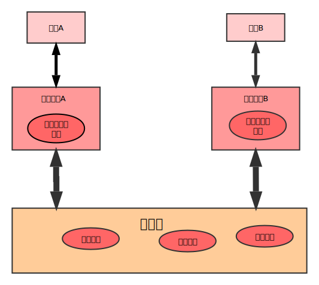
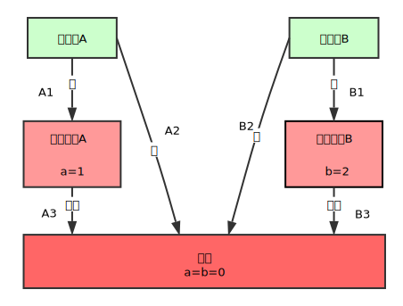

 <!DOCTYPE HTML>
<html lang="zh-CN">
<head><meta name="generator" content="Hexo 3.8.0">
  <meta charset="UTF-8">
  
    <title>第三章 Java内存模型 | 一叶轻舟渡万江</title>
    <meta name="viewport" content="width=device-width, initial-scale=1,user-scalable=no">
    
    <meta name="author" content="carl-zk">
    

    
    <meta name="description" content="Java内存模型的基础并发编程模型的两个关键问题： 线程之间如何通信。 线程之间如何同步。  命令式编程中线程通信机制：    并发模型 程序的公共状态 通信方式     共享内存 共享 隐式   消息传递 无 显示    同步是指程序中用于控制不同线程间操作发生相对顺序的机制。    并发模型 状态 方式     共享内存 显式 显式指定某个方法或某段代码需要在线程之间互斥执行   消息传递 隐">
<meta property="og:type" content="article">
<meta property="og:title" content="第三章 Java内存模型">
<meta property="og:url" content="https://github.com/carl-zk/blog/2017/03/11/第三章-Java内存模型/index.html">
<meta property="og:site_name" content="一叶轻舟渡万江">
<meta property="og:description" content="Java内存模型的基础并发编程模型的两个关键问题： 线程之间如何通信。 线程之间如何同步。  命令式编程中线程通信机制：    并发模型 程序的公共状态 通信方式     共享内存 共享 隐式   消息传递 无 显示    同步是指程序中用于控制不同线程间操作发生相对顺序的机制。    并发模型 状态 方式     共享内存 显式 显式指定某个方法或某段代码需要在线程之间互斥执行   消息传递 隐">
<meta property="og:locale" content="zh-CN">
<meta property="og:image" content="https://github.com/carl-zk/blog/2017/03/11/第三章-Java内存模型/jmm.svg">
<meta property="og:image" content="https://github.com/carl-zk/blog/2017/03/11/第三章-Java内存模型/wrong.svg">
<meta property="og:updated_time" content="2019-02-16T01:58:27.861Z">
<meta name="twitter:card" content="summary">
<meta name="twitter:title" content="第三章 Java内存模型">
<meta name="twitter:description" content="Java内存模型的基础并发编程模型的两个关键问题： 线程之间如何通信。 线程之间如何同步。  命令式编程中线程通信机制：    并发模型 程序的公共状态 通信方式     共享内存 共享 隐式   消息传递 无 显示    同步是指程序中用于控制不同线程间操作发生相对顺序的机制。    并发模型 状态 方式     共享内存 显式 显式指定某个方法或某段代码需要在线程之间互斥执行   消息传递 隐">
<meta name="twitter:image" content="https://github.com/carl-zk/blog/2017/03/11/第三章-Java内存模型/jmm.svg">

    
    <link rel="alternative" href="/atom.xml" title="一叶轻舟渡万江" type="application/atom+xml">
    
    
    <link rel="icon" href="/blog/img/favicon2.ico">
    
    
    <link rel="apple-touch-icon" href="/blog/img/tx2.jpg">
    <link rel="apple-touch-icon-precomposed" href="/blog/img/tx2.jpg">
    
    <link rel="stylesheet" href="/blog/css/style.css">
</head>
</html>
  <body>
    <header>
      
<div>
		
			<div id="imglogo">
				<a href="/blog/"></a>
			</div>
			
			<div id="textlogo">
				<h1 class="site-name"><a href="/blog/" title="一叶轻舟渡万江">一叶轻舟渡万江</a></h1>
				<h2 class="blog-motto">泰山不拒细壤故能成其高 江海不择细流故能就其深</h2>
			</div>
			<div class="navbar"><a class="navbutton navmobile" href="#" title="菜单">
			</a></div>
			<nav class="animated">
				<ul>
					<ul>
					 
						<li><a href="/blog/">主页</a></li>
					
						<li><a href="/blog/archives">归档</a></li>
					
						<li><a href="/blog/about">关于</a></li>
					
						<li><a href="/blog/door">门户</a></li>
					
					<li>
 					
					<form class="search" action="//google.com/search" method="get" accept-charset="utf-8">
						<label>Search</label>
						<input type="search" id="search" name="q" autocomplete="off" maxlength="20" placeholder="搜索">
						<input type="hidden" name="q" value="site:github.com/carl-zk/blog">
					</form>
					
					</li>
				</ul>
			</ul></nav>			
</div>
    </header>
    <div id="container">
      <div id="main" class="post" itemscope itemprop="blogPost">
  
	<article itemprop="articleBody"> 
		<header class="article-info clearfix">
  <h1 itemprop="name">
    
      <a href="/blog/2017/03/11/第三章-Java内存模型/" title="第三章 Java内存模型" itemprop="url">第三章 Java内存模型</a>
  </h1>
  <p class="article-author">By
       
		<a href="/blog/about" title="carl-zk" target="_blank" itemprop="author">carl-zk</a>
		
  </p><p class="article-time">
    <time datetime="2017-03-11T15:28:38.000Z" itemprop="datePublished"> 发表于 2017-03-11</time>
    
  </p>
</header>
	<div class="article-content">
		
		<div id="toc" class="toc-article">
			<strong class="toc-title">文章目录</strong>
		
			<ol class="toc"><li class="toc-item toc-level-1"><a class="toc-link" href="#Java内存模型的基础"><span class="toc-number">1.</span> <span class="toc-text">Java内存模型的基础</span></a><ol class="toc-child"><li class="toc-item toc-level-2"><a class="toc-link" href="#并发编程模型的两个关键问题："><span class="toc-number">1.1.</span> <span class="toc-text">并发编程模型的两个关键问题：</span></a></li><li class="toc-item toc-level-2"><a class="toc-link" href="#Java内存模型的抽象结构"><span class="toc-number">1.2.</span> <span class="toc-text">Java内存模型的抽象结构</span></a></li><li class="toc-item toc-level-2"><a class="toc-link" href="#从源代码到指令序列的重排序"><span class="toc-number">1.3.</span> <span class="toc-text">从源代码到指令序列的重排序</span></a></li><li class="toc-item toc-level-2"><a class="toc-link" href="#并发编程模型的分类"><span class="toc-number">1.4.</span> <span class="toc-text">并发编程模型的分类</span></a></li><li class="toc-item toc-level-2"><a class="toc-link" href="#happens-before简介"><span class="toc-number">1.5.</span> <span class="toc-text">happens-before简介</span></a></li></ol></li><li class="toc-item toc-level-1"><a class="toc-link" href="#重排序"><span class="toc-number">2.</span> <span class="toc-text">重排序</span></a><ol class="toc-child"><li class="toc-item toc-level-2"><a class="toc-link" href="#数据依赖性"><span class="toc-number">2.1.</span> <span class="toc-text">数据依赖性</span></a></li><li class="toc-item toc-level-2"><a class="toc-link" href="#as-if-serial语义"><span class="toc-number">2.2.</span> <span class="toc-text">as-if-serial语义</span></a></li></ol></li><li class="toc-item toc-level-1"><a class="toc-link" href="#volatile的内存语义"><span class="toc-number">3.</span> <span class="toc-text">volatile的内存语义</span></a><ol class="toc-child"><li class="toc-item toc-level-2"><a class="toc-link" href="#volatile的特性"><span class="toc-number">3.1.</span> <span class="toc-text">volatile的特性</span></a></li><li class="toc-item toc-level-2"><a class="toc-link" href="#volatile写-读建立的happens-before关系"><span class="toc-number">3.2.</span> <span class="toc-text">volatile写-读建立的happens-before关系</span></a></li><li class="toc-item toc-level-2"><a class="toc-link" href="#volatile写-读的内存语义"><span class="toc-number">3.3.</span> <span class="toc-text">volatile写-读的内存语义</span></a></li></ol></li><li class="toc-item toc-level-1"><a class="toc-link" href="#锁的内存语义"><span class="toc-number">4.</span> <span class="toc-text">锁的内存语义</span></a><ol class="toc-child"><li class="toc-item toc-level-2"><a class="toc-link" href="#锁的释放-获取建立的happens-before关系"><span class="toc-number">4.1.</span> <span class="toc-text">锁的释放-获取建立的happens-before关系</span></a></li><li class="toc-item toc-level-2"><a class="toc-link" href="#锁内存语义的实现"><span class="toc-number">4.2.</span> <span class="toc-text">锁内存语义的实现</span></a></li><li class="toc-item toc-level-2"><a class="toc-link" href="#concurrent包的实现"><span class="toc-number">4.3.</span> <span class="toc-text">concurrent包的实现</span></a></li></ol></li><li class="toc-item toc-level-1"><a class="toc-link" href="#final域的内存语义"><span class="toc-number">5.</span> <span class="toc-text">final域的内存语义</span></a></li></ol>
		
		</div>
		
		<h1 id="Java内存模型的基础"><a href="#Java内存模型的基础" class="headerlink" title="Java内存模型的基础"></a>Java内存模型的基础</h1><h2 id="并发编程模型的两个关键问题："><a href="#并发编程模型的两个关键问题：" class="headerlink" title="并发编程模型的两个关键问题："></a>并发编程模型的两个关键问题：</h2><ul>
<li>线程之间如何通信。</li>
<li>线程之间如何同步。</li>
</ul>
<p>命令式编程中线程通信机制：</p>
<table>
<thead>
<tr>
<th>并发模型</th>
<th style="text-align:center">程序的公共状态</th>
<th style="text-align:right">通信方式</th>
</tr>
</thead>
<tbody>
<tr>
<td>共享内存</td>
<td style="text-align:center">共享</td>
<td style="text-align:right">隐式</td>
</tr>
<tr>
<td>消息传递</td>
<td style="text-align:center">无</td>
<td style="text-align:right">显示</td>
</tr>
</tbody>
</table>
<p>同步是指程序中用于控制不同线程间操作发生相对顺序的机制。</p>
<table>
<thead>
<tr>
<th>并发模型</th>
<th style="text-align:center">状态</th>
<th style="text-align:right">方式</th>
</tr>
</thead>
<tbody>
<tr>
<td>共享内存</td>
<td style="text-align:center">显式</td>
<td style="text-align:right">显式指定某个方法或某段代码需要在线程之间互斥执行</td>
</tr>
<tr>
<td>消息传递</td>
<td style="text-align:center">隐式</td>
<td style="text-align:right">消息的发送必须在接收之前的属性决定的</td>
</tr>
</tbody>
</table>
<blockquote>
<p>java的并发采用的是共享内存模型，线程之间的通信是隐式的，整个通信过程对程序员完全透明。</p>
</blockquote>
<h2 id="Java内存模型的抽象结构"><a href="#Java内存模型的抽象结构" class="headerlink" title="Java内存模型的抽象结构"></a>Java内存模型的抽象结构</h2><p>在Java中，所有实例域、静态域和数组元素都存储在堆内存中，线程间共享，称为“共享变量”。<br>局部变量(Local Variables)、方法定义参数(Formal Method Parameters)和异常处理器参数(Exception Handler Parameters)不会在线程间共享，它们不会有内存可见性问题，也不受JMM影响。<br><a id="more"></a><br><br>注：本地内存是JMM的抽象概念，并不真实存在。</p>
<p>如果线程A与线程B通信，必须经历下面2个步骤：</p>
<ul>
<li>线程A把本地内存A中更新过的共享变量刷新到主内存中去。</li>
<li>线程B到主内存中去读取线程A之前已更新过的共享变量。</li>
</ul>
<p><strong>JVM通过控制主内存与每个线程的本地内存之间的交互，来为Java程序员提供内存可见性保证。</strong></p>
<h2 id="从源代码到指令序列的重排序"><a href="#从源代码到指令序列的重排序" class="headerlink" title="从源代码到指令序列的重排序"></a>从源代码到指令序列的重排序</h2><ol>
<li>编译器优化的重排序。(编译器重排序)</li>
<li>指令级并行的重排序。(处理器重排序)</li>
<li>内存系统的重排序。(处理器重排序)</li>
</ol>
<h2 id="并发编程模型的分类"><a href="#并发编程模型的分类" class="headerlink" title="并发编程模型的分类"></a>并发编程模型的分类</h2><p>每个处理器的缓冲区仅对它所在的处理器可见，所以会导致处理器对内存的读/写操作的执行顺序，不一定与内存实际发生的读/写操作顺序一致。</p>
<table>
<thead>
<tr>
<th>-</th>
<th style="text-align:left">processorA</th>
<th style="text-align:right">processorB</th>
</tr>
</thead>
<tbody>
<tr>
<td>代码</td>
<td style="text-align:left">a=1;  //A1 <br>x=b;  //A2</td>
<td style="text-align:right">b=2;  //B1<br>y=a;  //B2</td>
</tr>
<tr>
<td>运行结果</td>
<td style="text-align:left">初始状态: a=b=0<br>处理器允许执行后得到的结果: x=y=0</td>
</tr>
</tbody>
</table>
<p></p>
<h2 id="happens-before简介"><a href="#happens-before简介" class="headerlink" title="happens-before简介"></a>happens-before简介</h2><p>表述操作之间的内存可见性。<br>与程序员密切相关的happens-before规则：</p>
<ul>
<li>程序顺序规则：一个线程中的每个操作，happens-before于该线程之后的任意操作。</li>
<li>监视器锁规则：对一个锁的解锁，happens-before于随后对这个锁的加锁。</li>
<li>volatile变量规则：对一个volatile域的写，happens-before于任意后续对这个volatile域的读。</li>
<li>传递性：如果A happens-before B，B happens-before C，那么A happens-before C。</li>
</ul>
<p>happens-before规则让程序员很容易理解JMM内存可见性保证，避免去学习复杂的重排序规则和这些规则的具体实现。</p>
<h1 id="重排序"><a href="#重排序" class="headerlink" title="重排序"></a>重排序</h1><blockquote>
<p>重排序是指编译器和处理器为了优化程序性能而对指令序列进行重新排序的一种手段。</p>
</blockquote>
<h2 id="数据依赖性"><a href="#数据依赖性" class="headerlink" title="数据依赖性"></a>数据依赖性</h2><table>
<thead>
<tr>
<th>名称</th>
<th>代码示例</th>
<th>说明</th>
</tr>
</thead>
<tbody>
<tr>
<td>写后读</td>
<td>a=1;<br>b=a;</td>
<td>写一个变量之后，再读这个变量</td>
</tr>
<tr>
<td>写后写</td>
<td>a=1;<br>a=2;</td>
<td>写一个变量之后，再写这个变量</td>
</tr>
<tr>
<td>读后写</td>
<td>a=b;<br>b=1;</td>
<td>读一个变量之后，再写这个变量</td>
</tr>
</tbody>
</table>
<p>上面3种情况，只要重排序2个操作就会出现错误。<br>这里所说的数据依赖仅指单个处理器中执行的指令序列和单个线程中执行的操作，不同处理器和不同线程之间的数据依赖不被编译器和处理器考虑。</p>
<h2 id="as-if-serial语义"><a href="#as-if-serial语义" class="headerlink" title="as-if-serial语义"></a>as-if-serial语义</h2><blockquote>
<p>不管怎么重排序，(单线程)程序的执行结果不能被改变。编译器、runtime、处理器都必须遵从。</p>
</blockquote>
<h1 id="volatile的内存语义"><a href="#volatile的内存语义" class="headerlink" title="volatile的内存语义"></a>volatile的内存语义</h1><h2 id="volatile的特性"><a href="#volatile的特性" class="headerlink" title="volatile的特性"></a>volatile的特性</h2><ul>
<li>可见性。对一个volatile变量的读，总是能看到(任意线程)对这个volatile变量最后的写入。</li>
<li>原子性。对任意单个volatile变量的读/写具有原子性，但类似于volatile++这种复合操作不具有原子性。</li>
</ul>
<h2 id="volatile写-读建立的happens-before关系"><a href="#volatile写-读建立的happens-before关系" class="headerlink" title="volatile写-读建立的happens-before关系"></a>volatile写-读建立的happens-before关系</h2><p>斗胆的质疑一下本书作者，这里可能出错了，我不能认同把volatile真的类比成锁的获取和释放，然后可以对一个普通int型值进行读写的控制。下面是我实验代码，它的结果是不固定的，即书中happens-before的关系第2、3条不能成立：<br>额，N年之后，回头看到这里，发现其实下面的代码不能证明happens-before原则有错误。happens-before是规范，它的具体实现才有可能出错，而一个规范怎么会有错误呢。两个线程都是从主内存读b，这就代表了如果前面一个线程刚修改了b后面的线程会“立刻”看到修改后的值，仅此而已。<br><figure class="highlight java"><table><tr><td class="gutter"><pre><span class="line">1</span><br><span class="line">2</span><br><span class="line">3</span><br><span class="line">4</span><br><span class="line">5</span><br><span class="line">6</span><br><span class="line">7</span><br><span class="line">8</span><br><span class="line">9</span><br><span class="line">10</span><br><span class="line">11</span><br><span class="line">12</span><br><span class="line">13</span><br><span class="line">14</span><br><span class="line">15</span><br><span class="line">16</span><br><span class="line">17</span><br><span class="line">18</span><br><span class="line">19</span><br><span class="line">20</span><br><span class="line">21</span><br><span class="line">22</span><br><span class="line">23</span><br><span class="line">24</span><br><span class="line">25</span><br><span class="line">26</span><br><span class="line">27</span><br><span class="line">28</span><br><span class="line">29</span><br><span class="line">30</span><br><span class="line">31</span><br><span class="line">32</span><br><span class="line">33</span><br><span class="line">34</span><br><span class="line">35</span><br><span class="line">36</span><br><span class="line">37</span><br><span class="line">38</span><br><span class="line">39</span><br><span class="line">40</span><br><span class="line">41</span><br><span class="line">42</span><br><span class="line">43</span><br><span class="line">44</span><br><span class="line">45</span><br><span class="line">46</span><br><span class="line">47</span><br><span class="line">48</span><br><span class="line">49</span><br><span class="line">50</span><br><span class="line">51</span><br><span class="line">52</span><br><span class="line">53</span><br></pre></td><td class="code"><pre><span class="line"><span class="keyword">package</span> chapter01;</span><br><span class="line"></span><br><span class="line"><span class="comment">/**</span></span><br><span class="line"><span class="comment"> * Created by hero on 17-3-12.</span></span><br><span class="line"><span class="comment"> */</span></span><br><span class="line"><span class="keyword">public</span> <span class="class"><span class="keyword">class</span> <span class="title">SerialConsistent</span> </span>&#123;</span><br><span class="line">    <span class="keyword">public</span> <span class="keyword">int</span> a = <span class="number">0</span>;</span><br><span class="line">    <span class="keyword">public</span> <span class="keyword">volatile</span> <span class="keyword">boolean</span> b = <span class="keyword">false</span>;</span><br><span class="line">    <span class="keyword">public</span> <span class="keyword">int</span> t = <span class="number">5</span>;</span><br><span class="line"></span><br><span class="line">    <span class="function"><span class="keyword">public</span> <span class="keyword">void</span> <span class="title">write</span><span class="params">()</span> </span>&#123;</span><br><span class="line">        a = <span class="number">1</span>;</span><br><span class="line">        <span class="keyword">try</span> &#123;</span><br><span class="line">            Thread.sleep(<span class="number">501</span>);</span><br><span class="line">        &#125; <span class="keyword">catch</span> (InterruptedException e) &#123;</span><br><span class="line">            e.printStackTrace();</span><br><span class="line">        &#125;</span><br><span class="line">        b = <span class="keyword">true</span>;</span><br><span class="line">    &#125;</span><br><span class="line"></span><br><span class="line">    <span class="function"><span class="keyword">public</span> <span class="keyword">void</span> <span class="title">read</span><span class="params">()</span> </span>&#123;</span><br><span class="line">        <span class="keyword">if</span> (b) &#123;</span><br><span class="line">            t = a;</span><br><span class="line">        &#125;</span><br><span class="line">    &#125;</span><br><span class="line"></span><br><span class="line">    <span class="function"><span class="keyword">public</span> <span class="keyword">static</span> <span class="keyword">void</span> <span class="title">main</span><span class="params">(String[] args)</span> <span class="keyword">throws</span> InterruptedException </span>&#123;</span><br><span class="line">        SerialConsistent test = <span class="keyword">new</span> SerialConsistent();</span><br><span class="line">        test.run();</span><br><span class="line">    &#125;</span><br><span class="line"></span><br><span class="line">    <span class="function"><span class="keyword">public</span> <span class="keyword">void</span> <span class="title">run</span><span class="params">()</span> <span class="keyword">throws</span> InterruptedException </span>&#123;</span><br><span class="line">        Thread t1 = <span class="keyword">new</span> Thread(<span class="keyword">new</span> Runnable() &#123;</span><br><span class="line">            <span class="function"><span class="keyword">public</span> <span class="keyword">void</span> <span class="title">run</span><span class="params">()</span> </span>&#123;</span><br><span class="line">                write();</span><br><span class="line">            &#125;</span><br><span class="line">        &#125;);</span><br><span class="line">        Thread t2 = <span class="keyword">new</span> Thread(<span class="keyword">new</span> Runnable() &#123;</span><br><span class="line">            <span class="function"><span class="keyword">public</span> <span class="keyword">void</span> <span class="title">run</span><span class="params">()</span> </span>&#123;</span><br><span class="line">                read();</span><br><span class="line">            &#125;</span><br><span class="line">        &#125;);</span><br><span class="line"></span><br><span class="line">        t1.start();</span><br><span class="line">        TimeUnit.MILLISECONDS.sleep(<span class="number">500</span>);    <span class="comment">//保证t1在t2之前执行</span></span><br><span class="line">        t2.start();</span><br><span class="line"></span><br><span class="line">        t1.join();</span><br><span class="line">        t2.join();</span><br><span class="line"></span><br><span class="line">        System.out.println(t);</span><br><span class="line">    &#125;</span><br><span class="line">&#125;</span><br></pre></td></tr></table></figure></p>
<h2 id="volatile写-读的内存语义"><a href="#volatile写-读的内存语义" class="headerlink" title="volatile写-读的内存语义"></a>volatile写-读的内存语义</h2><p>线程A执行volatile变量写操作之后，线程B在读该变量时，本地内存会被JVM置为无效，必须从主内存读。</p>
<h1 id="锁的内存语义"><a href="#锁的内存语义" class="headerlink" title="锁的内存语义"></a>锁的内存语义</h1><h2 id="锁的释放-获取建立的happens-before关系"><a href="#锁的释放-获取建立的happens-before关系" class="headerlink" title="锁的释放-获取建立的happens-before关系"></a>锁的释放-获取建立的happens-before关系</h2><p>书中，这个happens-before递推关系是成立的。<br>下面的栗子证明，锁的happens-before会保证多线程的内存可见的传递性。<br><figure class="highlight java"><table><tr><td class="gutter"><pre><span class="line">1</span><br><span class="line">2</span><br><span class="line">3</span><br><span class="line">4</span><br><span class="line">5</span><br><span class="line">6</span><br><span class="line">7</span><br><span class="line">8</span><br><span class="line">9</span><br><span class="line">10</span><br><span class="line">11</span><br><span class="line">12</span><br><span class="line">13</span><br><span class="line">14</span><br><span class="line">15</span><br><span class="line">16</span><br><span class="line">17</span><br><span class="line">18</span><br><span class="line">19</span><br><span class="line">20</span><br><span class="line">21</span><br><span class="line">22</span><br><span class="line">23</span><br><span class="line">24</span><br><span class="line">25</span><br><span class="line">26</span><br><span class="line">27</span><br><span class="line">28</span><br><span class="line">29</span><br><span class="line">30</span><br><span class="line">31</span><br><span class="line">32</span><br><span class="line">33</span><br><span class="line">34</span><br><span class="line">35</span><br><span class="line">36</span><br><span class="line">37</span><br><span class="line">38</span><br><span class="line">39</span><br><span class="line">40</span><br><span class="line">41</span><br><span class="line">42</span><br><span class="line">43</span><br><span class="line">44</span><br><span class="line">45</span><br><span class="line">46</span><br><span class="line">47</span><br><span class="line">48</span><br><span class="line">49</span><br><span class="line">50</span><br><span class="line">51</span><br><span class="line">52</span><br><span class="line">53</span><br><span class="line">54</span><br><span class="line">55</span><br><span class="line">56</span><br><span class="line">57</span><br><span class="line">58</span><br><span class="line">59</span><br><span class="line">60</span><br><span class="line">61</span><br></pre></td><td class="code"><pre><span class="line"><span class="keyword">package</span> chapter01;</span><br><span class="line"></span><br><span class="line"><span class="keyword">import</span> java.util.concurrent.TimeUnit;</span><br><span class="line"><span class="keyword">import</span> java.util.concurrent.locks.ReentrantLock;</span><br><span class="line"></span><br><span class="line"><span class="comment">/**</span></span><br><span class="line"><span class="comment"> * Created by hero on 17-3-12.</span></span><br><span class="line"><span class="comment"> */</span></span><br><span class="line"><span class="keyword">public</span> <span class="class"><span class="keyword">class</span> <span class="title">ReentrantLockExample</span> </span>&#123;</span><br><span class="line">    <span class="keyword">int</span> a = <span class="number">0</span>;</span><br><span class="line">    ReentrantLock lock = <span class="keyword">new</span> ReentrantLock();</span><br><span class="line">    <span class="keyword">int</span> t = <span class="number">5</span>;</span><br><span class="line"></span><br><span class="line">    <span class="function"><span class="keyword">public</span> <span class="keyword">static</span> <span class="keyword">void</span> <span class="title">main</span><span class="params">(String[] args)</span> <span class="keyword">throws</span> InterruptedException </span>&#123;</span><br><span class="line">        ReentrantLockExample test = <span class="keyword">new</span> ReentrantLockExample();</span><br><span class="line">        test.run();</span><br><span class="line">    &#125;</span><br><span class="line"></span><br><span class="line">    <span class="function"><span class="keyword">public</span> <span class="keyword">void</span> <span class="title">write</span><span class="params">()</span> </span>&#123;</span><br><span class="line">        lock.lock();</span><br><span class="line">        <span class="keyword">try</span> &#123;</span><br><span class="line">            TimeUnit.MILLISECONDS.sleep(<span class="number">500</span>);</span><br><span class="line">            a++;</span><br><span class="line">        &#125; <span class="keyword">catch</span> (InterruptedException e) &#123;</span><br><span class="line">            e.printStackTrace();</span><br><span class="line">        &#125; <span class="keyword">finally</span> &#123;</span><br><span class="line">            lock.unlock();</span><br><span class="line">        &#125;</span><br><span class="line">    &#125;</span><br><span class="line"></span><br><span class="line">    <span class="function"><span class="keyword">public</span> <span class="keyword">void</span> <span class="title">read</span><span class="params">()</span> </span>&#123;</span><br><span class="line">        lock.lock();</span><br><span class="line">        <span class="keyword">try</span> &#123;</span><br><span class="line">            t = a;</span><br><span class="line">        &#125; <span class="keyword">finally</span> &#123;</span><br><span class="line">            lock.unlock();</span><br><span class="line">        &#125;</span><br><span class="line">    &#125;</span><br><span class="line"></span><br><span class="line">    <span class="function"><span class="keyword">public</span> <span class="keyword">void</span> <span class="title">run</span><span class="params">()</span> <span class="keyword">throws</span> InterruptedException </span>&#123;</span><br><span class="line">        Thread t1 = <span class="keyword">new</span> Thread(<span class="keyword">new</span> Runnable() &#123;</span><br><span class="line">            <span class="function"><span class="keyword">public</span> <span class="keyword">void</span> <span class="title">run</span><span class="params">()</span> </span>&#123;</span><br><span class="line">                write();</span><br><span class="line">            &#125;</span><br><span class="line">        &#125;);</span><br><span class="line">        Thread t2 = <span class="keyword">new</span> Thread(<span class="keyword">new</span> Runnable() &#123;</span><br><span class="line">            <span class="function"><span class="keyword">public</span> <span class="keyword">void</span> <span class="title">run</span><span class="params">()</span> </span>&#123;</span><br><span class="line">                read();</span><br><span class="line">            &#125;</span><br><span class="line">        &#125;);</span><br><span class="line"></span><br><span class="line">        t1.start();</span><br><span class="line">        TimeUnit.MILLISECONDS.sleep(<span class="number">200</span>);</span><br><span class="line">        t2.start();</span><br><span class="line"></span><br><span class="line">        t1.join();</span><br><span class="line">        t2.join();</span><br><span class="line"></span><br><span class="line">        System.out.println(t);</span><br><span class="line">    &#125;</span><br><span class="line">&#125;</span><br></pre></td></tr></table></figure></p>
<h2 id="锁内存语义的实现"><a href="#锁内存语义的实现" class="headerlink" title="锁内存语义的实现"></a>锁内存语义的实现</h2><p>以上面代码为例：<br><figure class="highlight java"><table><tr><td class="gutter"><pre><span class="line">1</span><br><span class="line">2</span><br><span class="line">3</span><br></pre></td><td class="code"><pre><span class="line"><span class="function"><span class="keyword">public</span> <span class="title">ReentrantLock</span><span class="params">()</span> </span>&#123;</span><br><span class="line">    sync = <span class="keyword">new</span> NonfairSync();</span><br><span class="line">&#125;</span><br></pre></td></tr></table></figure></p>
<p>默认非公平锁，那么lock的调用顺序则是：</p>
<ol>
<li>先CAS，成功则将当前线程设为独占者。(state：0无独占者，1有)，失败则</li>
<li>当前state=0则CAS，失败则有可能进入等待队列。state=1，则比较当前线程是否是独占者。</li>
</ol>
<p>公平锁的lock调用顺序是：</p>
<ol>
<li>先取状态state，满足公平条件后才能获取锁。</li>
</ol>
<p>公平锁和非公平锁的释放完全一样：<br><figure class="highlight java"><table><tr><td class="gutter"><pre><span class="line">1</span><br><span class="line">2</span><br><span class="line">3</span><br><span class="line">4</span><br><span class="line">5</span><br><span class="line">6</span><br><span class="line">7</span><br><span class="line">8</span><br><span class="line">9</span><br><span class="line">10</span><br><span class="line">11</span><br><span class="line">12</span><br></pre></td><td class="code"><pre><span class="line"><span class="function"><span class="keyword">protected</span> <span class="keyword">final</span> <span class="keyword">boolean</span> <span class="title">tryRelease</span><span class="params">(<span class="keyword">int</span> releases)</span> </span>&#123;</span><br><span class="line">    <span class="keyword">int</span> c = getState() - releases;</span><br><span class="line">    <span class="keyword">if</span> (Thread.currentThread() != getExclusiveOwnerThread())</span><br><span class="line">        <span class="keyword">throw</span> <span class="keyword">new</span> IllegalMonitorStateException();</span><br><span class="line">    <span class="keyword">boolean</span> free = <span class="keyword">false</span>;</span><br><span class="line">    <span class="keyword">if</span> (c == <span class="number">0</span>) &#123;</span><br><span class="line">        free = <span class="keyword">true</span>;</span><br><span class="line">        setExclusiveOwnerThread(<span class="keyword">null</span>);</span><br><span class="line">    &#125;</span><br><span class="line">    setState(c);</span><br><span class="line">    <span class="keyword">return</span> free;</span><br><span class="line">&#125;</span><br></pre></td></tr></table></figure></p>
<h2 id="concurrent包的实现"><a href="#concurrent包的实现" class="headerlink" title="concurrent包的实现"></a>concurrent包的实现</h2><p>由于Java的CAS同时具有volatile读和写的内存语义，因此Java线程之间的通信有下面4种：</p>
<ul>
<li>线程A写volatile变量，随后线程B读这个volatile变量。</li>
<li>线程A写volatile变量，随后线程B用CAS更新这个volatile变量。</li>
<li>线程A用CAS更新一个volatile变量，随后线程B用CAS更新这个volatile变量。</li>
<li>线程A用CAS更新一个volatile变量，随后线程B读这个volatile变量。</li>
</ul>
<p><a href="http://ifeve.com/sun-misc-unsafe/#header" target="_blank" rel="noopener"> sun.misc.Unsafe</a><br>unsafe的CAS是原子性的，至于它为什么叫unsafe，琢磨一下上面这个文章。</p>
<h1 id="final域的内存语义"><a href="#final域的内存语义" class="headerlink" title="final域的内存语义"></a>final域的内存语义</h1><p>我感觉作者错了，普通int怎么会从构造函数中’逃逸’出来，我用程序试了没出现初始值没写入普通域的情况。<br>另外，如果构造函数中的普通域可以重排到构造函数之外，，，你不觉得这不是优化，而是编译器的bug么？<br>有些东西确实很难用代码“亲眼看见”结果，但是原理是高于实现的，所以，是存在逃逸的可能性的。</p>
<p>读一读<a href="https://docs.oracle.com/javase/specs/" target="_blank" rel="noopener">Java language specification</a>吧!</p>
  
	</div>
		<footer class="article-footer clearfix">
<div class="article-catetags">

<div class="article-categories">
  <span></span>
  <a class="article-category-link" href="/blog/categories/并发编程的艺术/">并发编程的艺术</a>
</div>


</div>


	<div class="article-share" id="share">
	
	  <div data-url="https://github.com/carl-zk/blog/2017/03/11/第三章-Java内存模型/" data-title="第三章 Java内存模型 | 一叶轻舟渡万江" data-tsina class="share clearfix">
	  </div>
	
	</div>


</footer>

   	       
	</article>
	
<nav class="article-nav clearfix">
 
 <div class="prev">
 <a href="/blog/2017/03/12/ReentrantLock/" title="ReentrantLock">
  <strong>上一篇：</strong><br>
  <span>
  ReentrantLock</span>
</a>
</div>


<div class="next">
<a href="/blog/2017/03/11/第二章-Java并发机制的底层实现原理/" title="第二章 Java并发机制的底层实现原理">
 <strong>下一篇：</strong><br> 
 <span>第二章 Java并发机制的底层实现原理
</span>
</a>
</div>

</nav>


<!-- LiveRe City install code -->
<div id="lv-container" data-id="city" data-uid="MTAyMC8zMTU5NS84MTU5">
<script type="text/javascript">
   (function(d, s) {
       var j, e = d.getElementsByTagName(s)[0];

       if (typeof LivereTower === 'function') { return; }

       j = d.createElement(s);
       j.src = 'https://cdn-city.livere.com/js/embed.dist.js';
       j.async = true;

       e.parentNode.insertBefore(j, e);
   })(document, 'script');
</script>
<noscript>Please activate JavaScript for write a comment in LiveRe</noscript>
</div>
<!-- completed City install code -->
	

</div>  
      <div class="openaside"><a class="navbutton" href="#" title="显示侧边栏"></a></div>

  <div id="toc" class="toc-aside">
  <strong class="toc-title">文章目录</strong>
 
 <ol class="toc"><li class="toc-item toc-level-1"><a class="toc-link" href="#Java内存模型的基础"><span class="toc-number">1.</span> <span class="toc-text">Java内存模型的基础</span></a><ol class="toc-child"><li class="toc-item toc-level-2"><a class="toc-link" href="#并发编程模型的两个关键问题："><span class="toc-number">1.1.</span> <span class="toc-text">并发编程模型的两个关键问题：</span></a></li><li class="toc-item toc-level-2"><a class="toc-link" href="#Java内存模型的抽象结构"><span class="toc-number">1.2.</span> <span class="toc-text">Java内存模型的抽象结构</span></a></li><li class="toc-item toc-level-2"><a class="toc-link" href="#从源代码到指令序列的重排序"><span class="toc-number">1.3.</span> <span class="toc-text">从源代码到指令序列的重排序</span></a></li><li class="toc-item toc-level-2"><a class="toc-link" href="#并发编程模型的分类"><span class="toc-number">1.4.</span> <span class="toc-text">并发编程模型的分类</span></a></li><li class="toc-item toc-level-2"><a class="toc-link" href="#happens-before简介"><span class="toc-number">1.5.</span> <span class="toc-text">happens-before简介</span></a></li></ol></li><li class="toc-item toc-level-1"><a class="toc-link" href="#重排序"><span class="toc-number">2.</span> <span class="toc-text">重排序</span></a><ol class="toc-child"><li class="toc-item toc-level-2"><a class="toc-link" href="#数据依赖性"><span class="toc-number">2.1.</span> <span class="toc-text">数据依赖性</span></a></li><li class="toc-item toc-level-2"><a class="toc-link" href="#as-if-serial语义"><span class="toc-number">2.2.</span> <span class="toc-text">as-if-serial语义</span></a></li></ol></li><li class="toc-item toc-level-1"><a class="toc-link" href="#volatile的内存语义"><span class="toc-number">3.</span> <span class="toc-text">volatile的内存语义</span></a><ol class="toc-child"><li class="toc-item toc-level-2"><a class="toc-link" href="#volatile的特性"><span class="toc-number">3.1.</span> <span class="toc-text">volatile的特性</span></a></li><li class="toc-item toc-level-2"><a class="toc-link" href="#volatile写-读建立的happens-before关系"><span class="toc-number">3.2.</span> <span class="toc-text">volatile写-读建立的happens-before关系</span></a></li><li class="toc-item toc-level-2"><a class="toc-link" href="#volatile写-读的内存语义"><span class="toc-number">3.3.</span> <span class="toc-text">volatile写-读的内存语义</span></a></li></ol></li><li class="toc-item toc-level-1"><a class="toc-link" href="#锁的内存语义"><span class="toc-number">4.</span> <span class="toc-text">锁的内存语义</span></a><ol class="toc-child"><li class="toc-item toc-level-2"><a class="toc-link" href="#锁的释放-获取建立的happens-before关系"><span class="toc-number">4.1.</span> <span class="toc-text">锁的释放-获取建立的happens-before关系</span></a></li><li class="toc-item toc-level-2"><a class="toc-link" href="#锁内存语义的实现"><span class="toc-number">4.2.</span> <span class="toc-text">锁内存语义的实现</span></a></li><li class="toc-item toc-level-2"><a class="toc-link" href="#concurrent包的实现"><span class="toc-number">4.3.</span> <span class="toc-text">concurrent包的实现</span></a></li></ol></li><li class="toc-item toc-level-1"><a class="toc-link" href="#final域的内存语义"><span class="toc-number">5.</span> <span class="toc-text">final域的内存语义</span></a></li></ol>
 
  </div>

<div id="asidepart">
<div class="closeaside"><a class="closebutton" href="#" title="隐藏侧边栏"></a></div>
<aside class="clearfix">

  


  
<div class="categorieslist">
	<p class="asidetitle">分类</p>
		<ul>
		
		  
			<li><a href="/blog/categories/OFBiz/" title="OFBiz">OFBiz<sup>3</sup></a></li>
		  
		
		  
			<li><a href="/blog/categories/hdu/" title="hdu">hdu<sup>35</sup></a></li>
		  
		
		  
			<li><a href="/blog/categories/java/" title="java">java<sup>15</sup></a></li>
		  
		
		  
			<li><a href="/blog/categories/并发编程的艺术/" title="并发编程的艺术">并发编程的艺术<sup>7</sup></a></li>
		  
		
		  
			<li><a href="/blog/categories/数据结构/" title="数据结构">数据结构<sup>15</sup></a></li>
		  
		
		  
			<li><a href="/blog/categories/系统配置/" title="系统配置">系统配置<sup>11</sup></a></li>
		  
		
		  
			<li><a href="/blog/categories/设计模式/" title="设计模式">设计模式<sup>24</sup></a></li>
		  
		
		</ul>
</div>


  
<div class="tagslist">
	<p class="asidetitle">标签</p>
		<ul class="clearfix">
		
			
				<li><a href="/blog/tags/递归/" title="递归">递归<sup>6</sup></a></li>
			
		
			
				<li><a href="/blog/tags/oracle/" title="oracle">oracle<sup>6</sup></a></li>
			
		
			
				<li><a href="/blog/tags/javascript/" title="javascript">javascript<sup>6</sup></a></li>
			
		
			
				<li><a href="/blog/tags/reflect/" title="reflect">reflect<sup>4</sup></a></li>
			
		
			
				<li><a href="/blog/tags/MySQL/" title="MySQL">MySQL<sup>4</sup></a></li>
			
		
			
				<li><a href="/blog/tags/Servlet/" title="Servlet">Servlet<sup>3</sup></a></li>
			
		
			
				<li><a href="/blog/tags/LeetCode/" title="LeetCode">LeetCode<sup>3</sup></a></li>
			
		
			
				<li><a href="/blog/tags/spring/" title="spring">spring<sup>3</sup></a></li>
			
		
			
				<li><a href="/blog/tags/python/" title="python">python<sup>2</sup></a></li>
			
		
			
				<li><a href="/blog/tags/weblogic/" title="weblogic">weblogic<sup>2</sup></a></li>
			
		
			
				<li><a href="/blog/tags/sql/" title="sql">sql<sup>2</sup></a></li>
			
		
			
				<li><a href="/blog/tags/docker/" title="docker">docker<sup>2</sup></a></li>
			
		
			
				<li><a href="/blog/tags/oauth2/" title="oauth2">oauth2<sup>1</sup></a></li>
			
		
			
				<li><a href="/blog/tags/shell/" title="shell">shell<sup>1</sup></a></li>
			
		
			
				<li><a href="/blog/tags/elasticsearch/" title="elasticsearch">elasticsearch<sup>1</sup></a></li>
			
		
			
				<li><a href="/blog/tags/hibernate/" title="hibernate">hibernate<sup>1</sup></a></li>
			
		
			
				<li><a href="/blog/tags/log4j2/" title="log4j2">log4j2<sup>1</sup></a></li>
			
		
			
				<li><a href="/blog/tags/maven/" title="maven">maven<sup>1</sup></a></li>
			
		
			
				<li><a href="/blog/tags/nginx/" title="nginx">nginx<sup>1</sup></a></li>
			
		
			
				<li><a href="/blog/tags/redis/" title="redis">redis<sup>1</sup></a></li>
			
		
		</ul>
</div>


  <div class="linkslist">
  <p class="asidetitle">友情链接</p>
    <ul>
        
          <li>
            
            	<a href="http://www.ruanyifeng.com/blog/archives.html" target="_blank" title="阮一峰">阮一峰</a>
            
          </li>
        
          <li>
            
            	<a href="https://blog.csdn.net/wo541075754" target="_blank" title="丑胖侠">丑胖侠</a>
            
          </li>
        
          <li>
            
            	<a href="http://it.deepinmind.com/index.html" target="_blank" title="deepinmind">deepinmind</a>
            
          </li>
        
          <li>
            
            	<a href="https://www.cnblogs.com/xrq730/" target="_blank" title="五月的仓颉">五月的仓颉</a>
            
          </li>
        
          <li>
            
            	<a href="http://ifeve.com/category/java/" target="_blank" title="并发编程网">并发编程网</a>
            
          </li>
        
          <li>
            
            	<a href="https://github.com/carl-zk" target="_blank" title="git主页">git主页</a>
            
          </li>
        
    </ul>
</div>

</aside>
</div>
    </div>
    <footer><div id="footer">
	
	<div class="line">
		<span></span>
		<div class="author"></div>
	</div>
	
	
	<section class="info">
		<p>  <br>
			STAY FOOLISH, STAY HUNGRY.</p>
	</section>
	 
	<div class="social-font">

	</div>
			
		

		<p class="copyright">
		All Rights Reserved © 2019 
		
		<a href="/blog/about" target="_blank" title="carl-zk">carl-zk</a>
		
		
		</p>
</div>
</footer>
    <script src="/blog/js/jquery-2.0.3.min.js"></script>
<script src="/blog/js/jquery.imagesloaded.min.js"></script>
<script src="/blog/js/gallery.js"></script>
<script src="/blog/js/jquery.qrcode-0.12.0.min.js"></script>

<script type="text/javascript">
$(document).ready(function(){ 
  $('.navbar').click(function(){
    $('header nav').toggleClass('shownav');
  });
  var myWidth = 0;
  function getSize(){
    if( typeof( window.innerWidth ) == 'number' ) {
      myWidth = window.innerWidth;
    } else if( document.documentElement && document.documentElement.clientWidth) {
      myWidth = document.documentElement.clientWidth;
    };
  };
  var m = $('#main'),
      a = $('#asidepart'),
      c = $('.closeaside'),
      o = $('.openaside');
  c.click(function(){
    a.addClass('fadeOut').css('display', 'none');
    o.css('display', 'block').addClass('fadeIn');
    m.addClass('moveMain');
  });
  o.click(function(){
    o.css('display', 'none').removeClass('beforeFadeIn');
    a.css('display', 'block').removeClass('fadeOut').addClass('fadeIn');      
    m.removeClass('moveMain');
  });
  $(window).scroll(function(){
    o.css("top",Math.max(80,260-$(this).scrollTop()));
  });
  
  $(window).resize(function(){
    getSize(); 
    if (myWidth >= 1024) {
      $('header nav').removeClass('shownav');
    }else{
      m.removeClass('moveMain');
      a.css('display', 'block').removeClass('fadeOut');
      o.css('display', 'none');
      
      $('#toc.toc-aside').css('display', 'none');
        
    }
  });
});
</script>

<script type="text/javascript">
$(document).ready(function(){ 
  var ai = $('.article-content>iframe'),
      ae = $('.article-content>embed'),
      t  = $('#toc'),
      ta = $('#toc.toc-aside'),
      o  = $('.openaside'),
      c  = $('.closeaside');
  if(ai.length>0){
    ai.wrap('<div class="video-container" />');
  };
  if(ae.length>0){
   ae.wrap('<div class="video-container" />');
  };
  c.click(function(){
    ta.css('display', 'block').addClass('fadeIn');
  });
  o.click(function(){
    ta.css('display', 'none');
  });
  $(window).scroll(function(){
    ta.css("top",Math.max(140,320-$(this).scrollTop()));
  });
});
</script>


<script type="text/javascript">
$(document).ready(function(){ 
  var $this = $('.share'),
      url = $this.attr('data-url'),
      encodedUrl = encodeURIComponent(url),
      title = $this.attr('data-title'),
      tsina = $this.attr('data-tsina'),
      description = $this.attr('description');
  var html = [
  '<div class="hoverqrcode clearfix"></div>',
  '<a class="overlay" id="qrcode"></a>',
  '<a href="https://www.facebook.com/sharer.php?u=' + encodedUrl + '" class="article-share-facebook" target="_blank" title="Facebook"></a>',
  '<a href="https://twitter.com/intent/tweet?url=' + encodedUrl + '" class="article-share-twitter" target="_blank" title="Twitter"></a>',
  '<a href="#qrcode" class="article-share-qrcode" title="微信"></a>',
  '<a href="http://widget.renren.com/dialog/share?resourceUrl=' + encodedUrl + '&srcUrl=' + encodedUrl + '&title=' + title +'" class="article-share-renren" target="_blank" title="人人"></a>',
  '<a href="http://service.weibo.com/share/share.php?title='+title+'&url='+encodedUrl +'&ralateUid='+ tsina +'&searchPic=true&style=number' +'" class="article-share-weibo" target="_blank" title="微博"></a>',
  '<span title="Share to"></span>'
  ].join('');
  $this.append(html);

  $('.hoverqrcode').hide();

  var myWidth = 0;
  function updatehoverqrcode(){
    if( typeof( window.innerWidth ) == 'number' ) {
      myWidth = window.innerWidth;
    } else if( document.documentElement && document.documentElement.clientWidth) {
      myWidth = document.documentElement.clientWidth;
    };
    var qrsize = myWidth > 1024 ? 200:100;
    var options = {render: 'image', size: qrsize, fill: '#2ca6cb', text: url, radius: 0.5, quiet: 1};
    var p = $('.article-share-qrcode').position();
    $('.hoverqrcode').empty().css('width', qrsize).css('height', qrsize)
                          .css('left', p.left-qrsize/2+20).css('top', p.top-qrsize-10)
                          .qrcode(options);
  };
  $(window).resize(function(){
    $('.hoverqrcode').hide();
  });
  $('.article-share-qrcode').click(function(){
    updatehoverqrcode();
    $('.hoverqrcode').toggle();
  });
  $('.article-share-qrcode').hover(function(){}, function(){
      $('.hoverqrcode').hide();
  });
});   
</script>


<link rel="stylesheet" href="/blog/fancybox/jquery.fancybox.css" media="screen" type="text/css">
<script src="/blog/fancybox/jquery.fancybox.pack.js"></script>
<script type="text/javascript">
$(document).ready(function(){ 
  $('.article-content').each(function(i){
    $(this).find('img').each(function(){
      if ($(this).parent().hasClass('fancybox')) return;
      var alt = this.alt;
      if (alt) $(this).after('<span class="caption">' + alt + '</span>');
      $(this).wrap('<a href="' + this.src + '" title="' + alt + '" class="fancybox"></a>');
    });
    $(this).find('.fancybox').each(function(){
      $(this).attr('rel', 'article' + i);
    });
  });
  if($.fancybox){
    $('.fancybox').fancybox();
  }
}); 
</script>


<!-- Analytics Begin -->


<!-- Analytics End -->

<!-- Totop Begin -->

	<div id="totop">
	<a title="返回顶部"></a>
	</div>
	<script src="/blog/js/totop.js"></script>

<!-- Totop End -->

<!-- MathJax Begin -->
<!-- mathjax config similar to math.stackexchange -->


<!-- MathJax End -->

<!-- Tiny_search Begin -->

<!-- Tiny_search End -->

  </body>
</html>

